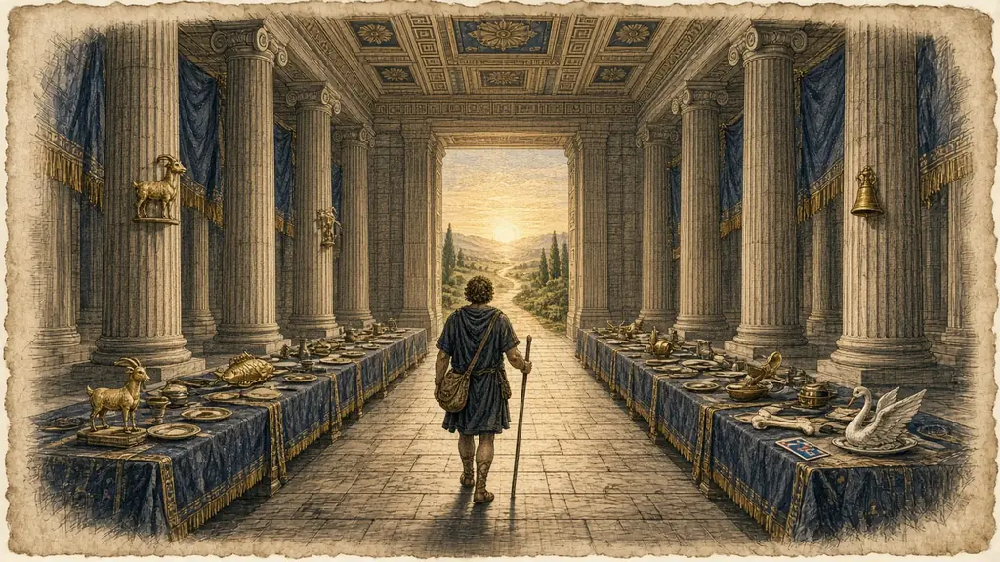

You return to the hall where it began, and walk the whole house once, from the front door to the great hall.

← From Seven Digits to Seventy-Nine · The whole course
Imagine you are standing in the doorway of a great hall. It is a still morning. The roof is whole, the columns are tall, and the long tables are laid for a banquet that will never happen. It is the hall from the oldest story in this course, where a poet once stood in the door and a roof fell behind him.
You are not here to mourn. You are here to walk. Because that is what the poet did, and what this whole course has taught you to do. Order and place. If you can walk through a place, you can walk through anything you have put in it.
You begin with the foundations, where you learned how memory works and how a picture sticks, and met the body, the building and the chain. You cross into numbers, where digits became pictures, then people, then scenes. You move on to memory in daily life, with its names, cards, talks and maps. Then language and study, with words, verbs, lists and formulas.
Then the advanced techniques, where you learned to go fast, to keep dates, to pack three digits into a syllable, to join palaces, and to give ideas a body. And finally mastery, with its speeches, its books, its competitions, its habits. It is a long walk, and you have taken it.
A last word, as old as the first. The Roman teachers said that memory is a treasure-house of ideas. A house is no use unless you live in it. What you have now is a method, and a method grows with use.
So this last lesson has three jobs. To walk the whole house once. To test you on a mixture of everything. And to help you plan what to do in the next thirty days, so that what you have learned becomes a habit.
Say what you think each one means, then open it.
The hall is the one from the story in lesson 4.
Here is everything, part by part. Say it aloud as you walk.
| Part | Lessons | What you have |
|---|---|---|
| I Foundations | 1 to 5 | How memory works; vivid pictures (SMASHIN' SCOPE); ten body pegs; the memory palace; links and stories. |
| II Numbers | 6 to 10 | Shape and rhyme pegs; the Major System; the Dominic System; PAO; choosing among them. |
| III Memory in Daily Life | 11 to 15 | Names and faces; a pack of cards; talks; mind maps; the five habits. |
| IV Language and Study | 16 to 20 | The keyword method and Latin roots; irregular verbs by family; alphabet pegs; formulas as characters; the study cycle. |
| V Advanced Techniques | 21 to 25 | Speed; the timeline palace; three-digit syllables; networks of palaces; abstract ideas made concrete. |
| VI Mastery | 26 to 30 | Long speeches; books and articles; the ten events; a practice system; this walk. |
Have a go before you open any answer. A rough attempt teaches you more than a perfect model you only read.
Say the answer first, then tap the card.
Walk the six parts in order and type them back: foundations, numbers, daily life, language, advanced, mastery.
A door, an abacus, a market stall, a book, a tower, a hall.
The list has gone. Type what you remember, one item per line.
These reach back to earlier rooms. Answer in your head or out loud, then check.
In a year from now, what do you want to be able to do with your memory that you cannot do today?